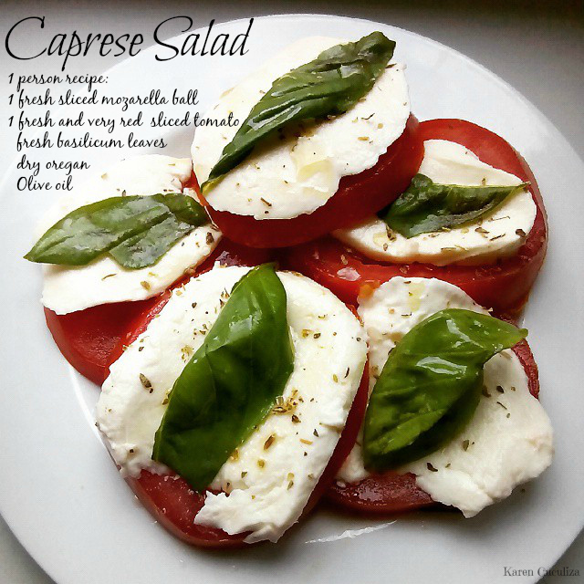

Caprese Salad¶

- Serves: 2
- Type: Starter - Appetizer
Background¶
This is a traditional summer Italian starter. This is a very easy and quick starter and if you are going to offer an Italian meal this is always a good choice. Also, you can use this recipe as appetiser using cherries tomatoes instead of salad tomatoes (or beefsteak tomato) and cherry mozzarella (or dicing the mozzarella) sticking (or impaling) them with a toothpick or a wooden stick. For sure you “farai bella figura” ( you will amaze your guest).
Ingredients¶
- 2 mature big salad tomatoes or beefsteak tomatoes
- 2 fresh mozzarella - you can use also Buffala mozzarella for more taste
- 5 fresh basil leaves
- 1 teaspoon dry origano
- 1 teaspoon dry basil
- 2 tablespoon olive oil
- white pepper to taste
- salt to taste
Steps¶
- Mix the olive oil with salt, pepper, dry basil and dry origano in a small bowl.
- Cut the tomatoes and mozzarella in thick slices.
- Leave the mozzarella in a sieve for a least 10 minutes, this will help to drain the milk in excess
- Alternate a tomato slice with a basil leave and a slice of mozzarella, pour the aromatic olive oil above the tomatoes and mozzarella.
- Serve immediately and buon appetito!